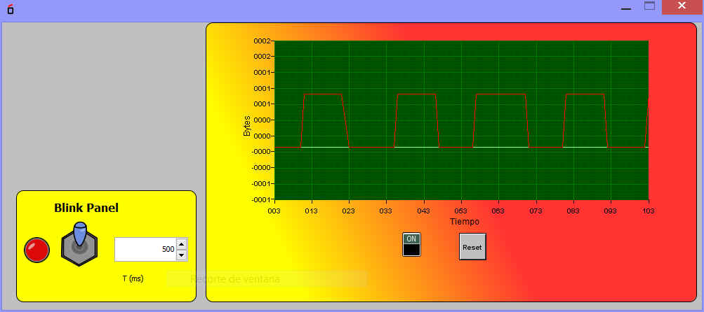

Este Bloque permite el trazado en tiempo real de una señal de tipo digital.
Pose un interruptor para inciar la captura de valor y otro para el Reset (limpieza de la pantalla)
Su entrada externa es el Pin-Entrada
